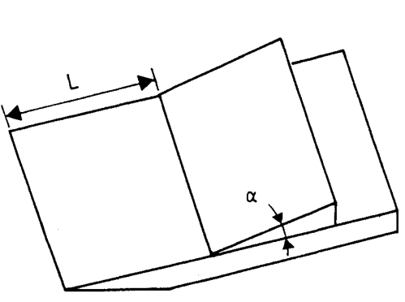
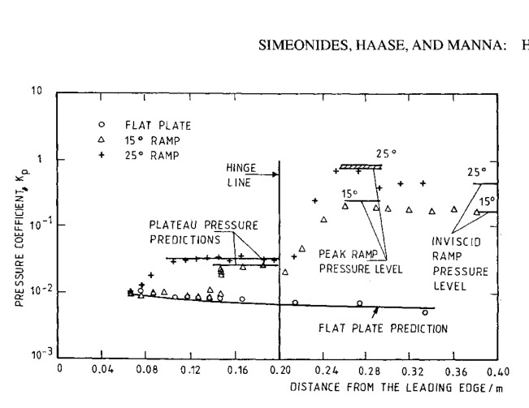
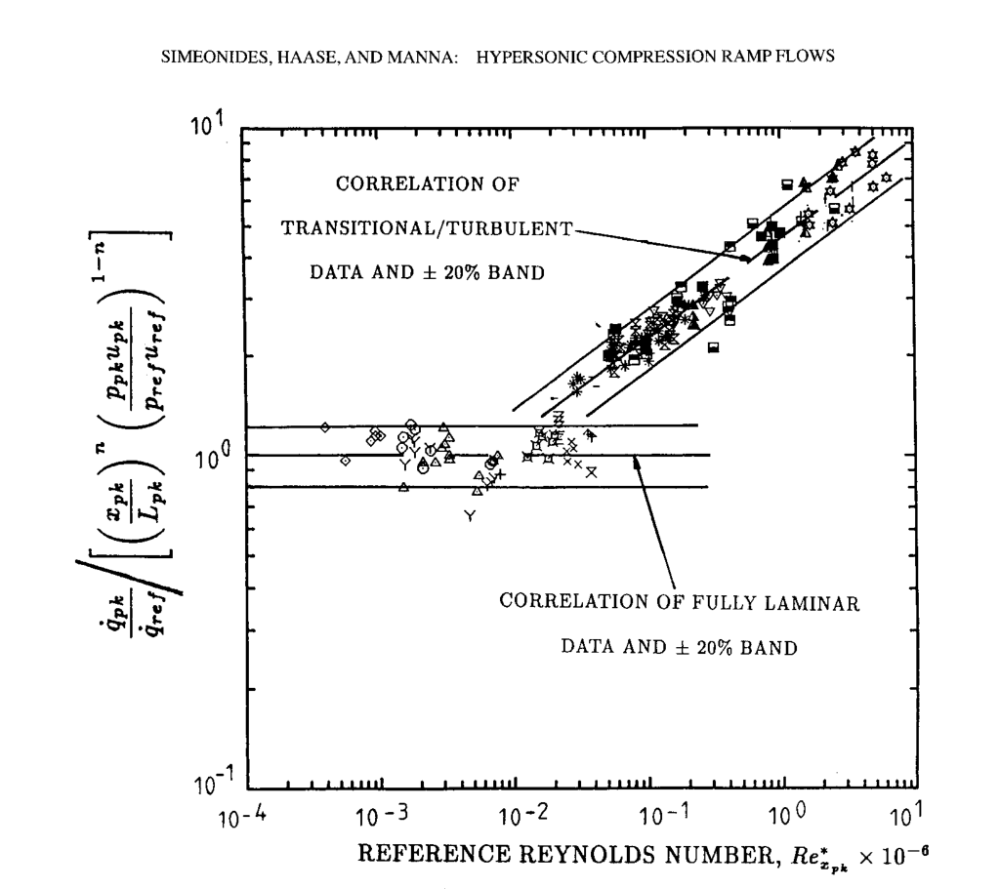
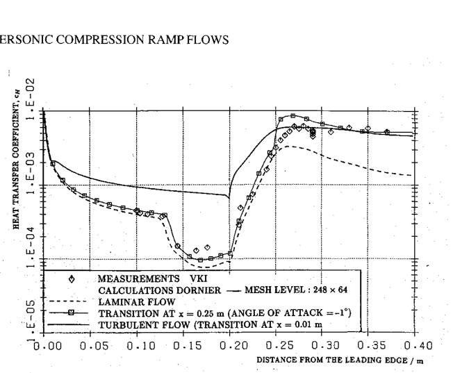

01中文摘要
本文给出二维压缩拐角全层流/转捩实验数据，用于验证求解器并检验简单解析预测方法。实验覆盖高超声速来流、不同拐角角和壁温比，测量压力与热流；计算采用 Navier-Stokes 方程，重点考察网格分辨率和收敛判据。作者用粘性压力干扰与爆炸波理论预测平板上游压力，用自由干扰理论预测分离平台压力，用无粘斜激波理论预测再附下游和斜坡压力，并以参考温度法预测附着区热流、构造峰值热流关联式。结果表明，分离区预测需要很细的法向网格和严格收敛判据，转捩干扰可用再附后开启代数湍流模型的工程方法处理。
02阅读说明
文章类型：实验 + 解析预测 + 两套CFD求解器验证的混合研究。材料范围：10页全文（PDF第1-10页=期刊p301-310）已全部读完；bundle提供14项抓图/表（Fig.1-14及Table 1）。图表可读性：压力、热流、纹影/密度等主图可读；双栏PDF文本层对式(4)(5)(7)的数学符号有丢字，已用原PDF第3页图像与OCR交叉核对，但式(4)(5)的个别上下标仍不能逐字确认，凡不能确认处在正文注明。信息完整度：高；试验工况、不确定度、网格、收敛准则、结论齐全。提取口径：仅依据bundle文本、图注与原PDF公式页，不引外部文献结论。 文章类型：期刊
03一句话核心与三句话摘要
M6与M14压缩拐角实验、解析预测和两套N-S求解器验证：压力/热流预测与收敛准则
- 问题是高超声速压缩拐角激波/边界层干扰中，解析方法能预测什么、全N-S又必须预测什么，以及湍流/转捩如何处理。 AI概括
- 作者用VKI Mach 6与Mach 14实验（7.5°、前向15°、后向15°三个工况）检验黏性干扰+爆炸波+自由干扰+斜激波理论、参考温度法和峰值热流关联式，并用Dornier与VKI两套二维全N-S求解器做网格与收敛研究。 原文明确
- 压力平台/峰值可由解析方法较好给出，但分离区范围必须靠细网格全N-S；法向网格分辨率比流向更关键，收敛应以分离点位置稳定为准；转捩干扰可在再附点下游开启代数湍流模型得到热流上界。 原文明确
04核心内容清单
| 要点 | 类型 | 重要性 | 原文依据 | 属性 |
|---|---|---|---|---|
| 黏性干扰+前缘钝度爆炸波理论预测平板上游压力升高，自由干扰理论预测分离平台压力，斜激波理论预测斜坡峰值压力，三者与实测在量级上吻合。 | 解析预测能力 | A | p303-305；Fig.4 | 原文明确 |
| 参考温度法能较好预测附体区（干扰上游和再附后斜坡）的层流/湍流热流，但不能直接处理分离区与转捩区。 | 解析预测能力 | A | p303、p305；Fig.5 | 原文明确 |
| 峰值热流关联式(5)-(7)引入再附边界层减薄长度Lpk，对23篇文献、200多个M∞=5-20的数据点给出±20%带内的统一关联。 | 关联式 | A | p305-306；Fig.6；式(5)-(7) | 原文明确 |
| Lpk=δs/sin(α-αs)按Bushnell-Weinstein方法计算，与实测峰值热流位置一致。 | 长度尺度 | A | p303、p306；式(6) | 原文明确 |
| 解析/半经验方法不能准确预测分离点位置和分离区范围，因此全N-S对控制效率与详细热流是必要的。 | 方法边界 | A | p301、p303 | 原文明确 |
| L2残差下降3-4个量级不足以判定分离流收敛；应以分离点位置稳定为判据，VKI单网格算例需下降6个量级。 | 收敛准则 | A | p306-307 | 原文明确 |
| 法向网格分辨率显著比流向网格分辨率重要；长高比约4时，流向/法向点数比取长高比的一半或更小更合适。 | 网格准则 | A | p307-308 | 原文明确 |
| Mach 6、7.5°、全层流工况：计算压力与Cf给出分离泡，热流在层流段吻合；约120 mm后实验转捩使热流高于层流预测。 | 验证结果 | A | p306-307；Fig.7-8、Fig.10 | 原文明确 |
| Mach 14前向15°、全层流工况：两套代码压力/Cf总体一致；VKI粗法向网格低估干扰区范围与热流，最细Dornier网格达到网格无关。 | 验证结果 | A | p307-308；Fig.9-11 | 原文明确 |
| Mach 14后向15°、再附点附近转捩工况：层流计算高估分离区、低估转捩后热流；在再附点下游开启湍流模型后与实测接近并给出热流上界。 | 转捩处理 | A | p308-309；Fig.12-14 | 原文明确 |
| 再附区Görtler涡造成的展向条带热流峰值，不会显著超过时均湍流热流水平（实验条带幅度可达约±50%）。 | 热流现象 | B | p302、p309 | 原文明确 |
| 1°低头攻角可在计算中粗略模拟实验模型35/55 μm的前缘钝度。 | 建模技巧 | B | p309；Fig.13-14 | 原文明确 |
05引言：研究问题与领域缺口
【原文明确】引言面向再入飞行器与高超声速巡航器的控制面/压缩面设计：激波/边界层干扰会改变压力分布（控制效率）并造成局部高热流，层流边界层因抗逆压能力弱而最容易分离，且分离会促进转捩（p301）。作者汇总了M∞=6与14、斜坡角7.5°-25°、单位雷诺数6-15×10^6/m、Tw/T0=0.1-0.85、以铰链距离为参考的Re=0.3-2.5×10^6的实验数据库（p301-302）。缺口有三：解析/半经验方法不能可靠给出分离点与分离区范围；全N-S缺少严格验证；完全湍流干扰缺少可靠湍流模型（p301、p303）。因此本文同时评估解析、实验与CFD三条路线，并明确只用两个完全层流工况做代码验证，转捩/湍流数据用于峰值热流关联式（p302）。
06流动条件与几何构型
| 项目 | 数值/描述 | 依据 | 备注 |
|---|---|---|---|
| 总体实验数据库范围 | 斜坡角7.5°-25°；M∞=6与14；Reunit=6-15×10^6/m；Tw/T0=0.1-0.85；以铰链距离为参考的Re=0.3-2.5×10^6 | p301-302 | |
| 工况1（Mach 6） | 7.5°斜坡，铰链距前缘40 mm，Reunit=(10±1)×10^6/m，T0=470±15 K，Tw=绝热壁温，全层流 | p302，Sec. II | |
| 工况1来流不确定度 | M∞=6±1%；Reunit±10%；T0±3% | p302 | |
| 工况1前缘 | 前缘厚度80 μm | p302 | |
| 工况1测量不确定度 | Kp总体±10%，压力±5% | p302 | |
| 工况2（Mach 14前向斜坡） | 前向15°斜坡，铰链距前缘70 mm，Reunit=(6.5±0.8)×10^6/m，T0=2385±215 K，Tw=295 K，全层流 | p302 | |
| 工况2来流不确定度 | M∞=14±1.5%；Reunit±13%；T0±9% | p302 | |
| 工况2前缘 | 前缘厚度70±10 μm | p302 | |
| 工况2测量不确定度 | 平板Kp±16%，斜坡Kp±6%，热流±13% | p302 | |
| 工况3（Mach 14后向斜坡） | 后向15°斜坡，铰链距前缘200 mm，Reunit=(6.5±0.8)×10^6/m，T0=2385±215 K，Tw=295 K，转捩发生在再附点附近 | p302 | |
| 工况3压力模型前缘 | 前缘厚度55±3 μm（压力测量模型） | p302 | |
| 工况3热流模型前缘 | 前缘厚度35±10 μm（热流测量模型） | p302 | |
| 工况3测量不确定度 | 平板Kp±16%，斜坡Kp±6%，热流±13% | p302 | |
| 壁温比 | Mach 14：Tw/T0=0.12（295 K/2385 K） | p302、Fig.9-14图注 | |
| Mach 6风洞 | VKI H-3暂冲式风洞 | p302 | |
| Mach 14风洞 | Longshot重活塞炮风洞 | p302 | |
| 实验诊断 | 表面压力与热流分布测量（多种技术），配合纹影、表面油流、升华显示；重复性与流场建立已检查 | p302 | |
| 二维性检查 | 通过侧板/流场显示与展向测量检查二维性；文中未给出侧板尺寸细节 | p302 | |
| 转捩判定 | 纹影颗粒结构、表面温度高频脉动（24 kHz）与热流分布偏离层流参考温度预测 | p302 | |
| 解析数据库 | 23篇文献、200多个峰值热流数据点，M∞=5-20，覆盖约5个量级参考雷诺数 | p305-306 | |
| CFD程序 | Dornier与VKI两套二维非定常全N-S有限体积程序 | p303-304 | |
| Dornier数值方法 | 单元中心有限体积；中心格式+二阶/四阶人工耗散；多级Runge-Kutta；Cebeci-Smith代数湍流模型+转捩开关；Stock-Haase长度尺度 | p303-304 | |
| VKI数值方法 | 单元中心有限体积；通量差分裂+MUSCL/TVD；多级Runge-Kutta | p303-304 | |
| Mach 6网格 | Dornier 62×12、124×24、248×48、496×96；VKI 190×60；最细Dornier壁面首层5×10^-6 m，VKI 6.7×10^-5 m | p304-305，Table 1 | |
| Mach 14前向网格 | Dornier 44×20、88×40、176×80、352×160；VKI 84×30与190×60 | p304-305，Table 1 | |
| Mach 14后向网格 | Dornier 62×31、124×62、248×124，另加248×64；仅Dornier计算 | p304-305，Table 1 | |
| 收敛判据 | 常规L2密度残差下降3-4个量级；分离流以分离点位置稳定为准，VKI单网格需下降6个量级 | p306-307 | |
| 计算域 | Mach 6 Dornier 120 mm、VKI 80 mm下游；Mach 14前向400 mm下游（文中给出者） | p305 |
07核心现象与关键参数
| 参数 | 定义 | 数值 | 关系/说明 | 依据 |
|---|---|---|---|---|
| Kp | 压力系数，Kp=(p-p∞)/(0.5γp∞M∞²) | 用于比较实测/计算压力 | 式(1) | p302 |
| Cf | 摩阻系数，Cf=τw/(0.5ρ∞u∞²) | 用于确定分离/再附 | 式(2) | p302、p306 |
| cH | 修正Stanton数，cH=qs/[ρ∞u∞cp(T0-Tw)] | 热流系数 | 式(3) | p303 |
| M∞ | 来流马赫数 | 6（工况1）；14（工况2、3） | 相似参数 | p302 |
| Reunit | 单位雷诺数 | 10×10^6/m（M6）；6.5×10^6/m（M14） | 边界层厚度/雷诺数标度 | p302 |
| T0 | 来流总温 | 470 K（M6）；2385 K（M14） | 热流归一化 | p302 |
| Tw | 壁温 | 绝热（M6）；295 K（M14） | Tw/T0=0.12（M14） | p302 |
| L | 铰链线到前缘距离（斜坡起点） | 40 mm（M6 7.5°）；70 mm、200 mm（M14 15°） | Re_L的参考长度 | p302 |
| α | 斜坡偏转角 | 7.5°（工况1）；15°（工况2、3） | 斜激波/剪切层偏角 | p302 |
| αs | 分离剪切层相对来流的偏转角（自由干扰理论） | 由自由干扰理论给出 | 式(6)分母 | p303 |
| δs | 再附点处剪切层厚度 | 用可压缩Blasius结果计算 | 式(6)分子 | p303 |
| Lpk | 再附边界层在峰值热流位置的有效增长长度（虚拟原点在再附点附近） | Lpk=δs/sin(α-αs)；与实测峰值位置一致 | 式(6)，并替代式(4)中的xpk | p303、p306 |
| xpk | 峰值热流位置到前缘的距离 | 由压力峰值/实测确定；文中未给各工况具体数值 | 式(7)长度比 | p303 |
| ppk/pref | 峰值压力与参考压力比 | 可用单激波、双激波或等熵压缩近似 | 式(5)/(7) | p303 |
| qpk/qref | 峰值热流与层流平板参考热流之比 | 层流/转捩/湍流数据落在±20%带内 | 式(5)/(7) | p305-306 |
| B、a、n | 峰值热流关联式系数/指数 | 全层流：a=0,B=1,n=0.5；全湍流：a=0,B=1,n=0.2；湍流峰值+层流参考：a=0.3,B=0.072,n=0.2 | 式(5) | p303 |
| N_Lsep | 分离点处边界层内网格点数 | Table 1按网格列出；具体数值随网格变化 | 网格分辨率指标 | p304，Table 1 |
| N_ssep | 分离点与再附点之间的网格点数 | Table 1按网格列出 | 分离区分辨率指标 | p304，Table 1 |
| 长高比 | 计算域长度与高度之比 | 约4；建议流向/法向网格点数比不大于其一半 | 网格设计准则 | p307-308 |
08方法与数据
【原文明确】实验：Mach 6工况在VKI H-3暂冲式风洞，7.5°斜坡、铰链40 mm、Reunit=(10±1)×10^6/m、T0=470±15 K、绝热壁、前缘厚度80 μm、全层流（p302）。Mach 14工况在Longshot重活塞炮风洞，15°斜坡；前向斜坡铰链70 mm、全层流；后向斜坡铰链200 mm、转捩发生在再附点附近；两者Reunit=(6.5±0.8)×10^6/m、T0=2385±215 K、Tw=295 K（p302）。表面压力与热流用多种测量技术，配合纹影、表面油流与升华显示；并做了重复性与流场建立检查（p302）。不确定度：Mach 6的Kp约±10%（压力±5%）；Mach 14平板Kp±16%、斜坡±6%、热流±13%（p302）。解析：上游平板用黏性干扰+前缘钝度爆炸波理论，分离平台用自由干扰理论，斜坡峰值压力用单激波或双激波斜激波理论；附体区热流用参考温度法；峰值热流用式(5)-(7)关联（p303）。CFD：Dornier与VKI两套二维非定常全N-S有限体积程序，单元中心，Dornier用中心格式+二阶/四阶人工耗散，VKI用通量差分裂+MUSCL/TVD，多级Runge-Kutta推进；Dornier含Cebeci-Smith代数湍流模型与转捩开关，长度尺度用Stock-Haase方法（p303-304）。网格：Mach 6 Dornier 62×12、124×24、248×48、496×96，VKI 190×60；Mach 14前向Dornier 44×20、88×40、176×80、352×160，VKI 84×30与190×60；后向Dornier 62×31、124×62、248×124及248×64（p304-305，Table 1）。Dornier最细网格壁面首层法向间距5×10^-6 m，VKI为6.7×10^-5 m（p305）。
| 项目 | 内容 | 依据 | 备注 |
|---|---|---|---|
| 实验设施 | VKI H-3 Mach 6暂冲式风洞；Longshot Mach 14重活塞炮风洞 | p302 | |
| 测量对象 | 平板与平板/二维斜坡模型表面压力分布、热流分布 | p302 | |
| 测量技术 | 多种表面压力与热流测量技术（具体传感器型式文中未逐项列出）；配合纹影、表面油流、升华显示 | p302 | |
| 实验质量控制 | 重复性与流场建立检查；侧板/展向测量检查二维性 | p302 | |
| 不确定度 | M6：Kp±10%、压力±5%；M14：平板Kp±16%、斜坡Kp±6%、热流±13% | p302 | |
| 转捩检测 | 纹影颗粒结构、24 kHz表面温度脉动、热流偏离层流参考温度预测 | p302 | |
| 解析-压力上游 | 黏性压力干扰理论+前缘钝度爆炸波理论 | p303 | |
| 解析-分离平台 | 自由干扰理论预测平台压力 | p303 | |
| 解析-斜坡峰值压力 | 单斜激波、双激波（分离激波+再附激波）或等熵压缩 | p303 | |
| 解析-附体热流 | 参考温度法，式(4)；层流n=0.5,A=0.332,s=Pr^{2/3}；湍流n=0.2,A=0.0296,s=1 | p303 | |
| 解析-峰值热流 | 把式(4)用于参考平板与峰值点并取比值，得式(5)；计入再附边界层减薄Lpk；式(6)给Lpk；忽略速度比后得式(7) | p303 | |
| 峰值热流数据库 | 23篇文献、200多个数据点，M∞=5-20，约5个量级参考雷诺数，层流/转捩/湍流 | p305-306 | |
| CFD方程 | 二维非定常全N-S方程，单元中心有限体积，时间推进 | p303-304 | |
| Dornier离散 | 中心格式+二阶/四阶人工耗散；多级Runge-Kutta；多重网格 | p303-304 | |
| VKI离散 | 通量差分裂+MUSCL/TVD；多级Runge-Kutta | p303-304 | |
| 湍流模型 | Dornier：Cebeci-Smith代数模型+转捩开关；边界层长度尺度用Stock-Haase方法 | p304 | |
| 网格 | 三个工况各自的Dornier网格序列与VKI网格，详见conditions；壁面法向加密/几何拉伸 | p304-305，Table 1 | |
| 网格无关性 | 最细两套Dornier网格给出网格无关解；VKI粗法向网格低估干扰区范围与热流 | p307-308 | |
| 收敛判据 | L2密度残差3-4个量级仅作初判；分离流以分离点位置稳定为准，VKI需6个量级 | p306-307 | |
| 转捩工况处理 | 层流计算至再附，随后在再附点下游开启Cebeci-Smith模型；另用1°低头攻角模拟35/55 μm前缘钝度 | p308-309 | |
| 对比方式 | 实测vs解析vs两套CFD的压力Kp、Cf、热流cH分布；密度等值线与纹影对比；Table 1给分离点/分离区网格点数 | p304-309 |
09核心推导与公式
用参考温度法给出层流平板参考热流与峰值点热流，再把再附边界层的虚拟原点移到再附点、用Bushnell-Weinstein长度Lpk替代峰值点流向距离xpk，最后取两者比值得到以压力比和长度比表示的峰值热流关联式。
关键假设
- 参考温度法适用于附体边界层；峰值热流点按附体湍流/层流边界层处理，分离区内部不直接用该式（p303）。
- 参考状态取零迎角平板、来流边缘条件、边界层原点在前缘（p303）。
- 再附压缩使边界层变薄，可用虚拟原点在再附点附近的Lpk代替xpk（p303）。
- 峰值点速度比upk/u∞常可忽略，误差约10%（p303）。
- 峰值压力比ppk/pref可用单激波、双激波或等熵压缩近似（p303）。
推导过程
先统一无量纲量：Kp用动压归一化压力，Cf用动压归一化壁面剪应力，cH用ρ∞u∞cp(T0-Tw)归一化壁面热流。
式(4)把cH(Re_x*)^n写成A、边缘/来流条件修正、温度比(T*/Te)^{1-2n}、cp*/cp以及(Tr-Tw)/(T0-Tw)的函数；层流取n=0.5、A=0.332、s=Pr^{2/3}，湍流取n=0.2、A=0.0296、s=1（高Mach）。【受限于材料】式(4)在PDF文本层符号不完整，此处只按原页可辨识结构概述，未逐字转录。
把式(4)用于零迎角平板参考边界层，得到“若无干扰、在峰值热流对应位置”的参考热流qref；再用于峰值点，若边界层原点仍在前缘，则雷诺数项用xpk。若计入再附压缩造成的边界层减薄，把虚拟原点移到再附点附近，则雷诺数项改用有效增长长度Lpk。
峰值估计除以参考值，消去A与共同温度因子，得到式(5)：qpk/qref含B、Re_xpk*的a次方、压力/速度比项的1-n次方以及Lpk/xpk的n次方。系数按工况取：全层流a=0,B=1,n=0.5；全湍流a=0,B=1,n=0.2；湍流峰值+层流参考a=0.3,B=0.072,n=0.2。【受限于材料】式(5)的完整上下标在PDF文本层不能逐字确认，故不转写其LaTeX。
再附边界层的有效增长长度由再附点剪切层厚度δs和剪切层相对来流的偏角α-αs给出；δs用可压缩Blasius结果，αs用自由干扰理论。
对全层流或全湍流干扰，忽略upk/u∞（约10%误差），并用单激波/双激波或等熵压缩给出ppk/pref，式(5)简化为式(7)：峰值热流比等于压力比的1-n次方乘以再附/参考边界层增长长度比的n次方。
以式(7)为骨架，对23篇文献、200多个M∞=5-20的层流/转捩/湍流峰值热流数据作图，数据落在±20%带内；式(6)给出的Lpk位置与实测峰值热流位置一致。
适用边界：该关联式只给峰值热流，不给分离点、分离区范围或整个热流分布；式(6)依赖δs与αs的计算；忽略upk/u∞带来约10%误差；压力比需由单激波/双激波/等熵压缩近似；转捩工况需按B=0.072、a=0.3标定；完全湍流干扰的湍流模型仍不成熟（p303、p309）。式(4)(5)的个别上下标受限于PDF文本层，未逐字确认。
10结果：主要发现与关键证据
【原文明确】解析压力预测：Mach 14平板上游的压力升高由黏性干扰+钝度爆炸波给出，分离平台由自由干扰理论给出，斜坡峰值由斜激波理论给出，三者与实测压力在平台和峰值量级上吻合（p304-305，Fig.4）；但解析法不能给出分离点位置和分离区范围（p303）。热流：参考温度法在附体区（干扰上游与再附后斜坡）对层流和湍流再附都给出合理分布；在分离/转捩区偏差明显（p303、p305，Fig.5）。峰值热流关联：式(5)-(7)把峰值热流与层流平板参考热流之比写成压力比、长度比和参考雷诺数的函数，并计入再附边界层减薄长度Lpk；用23篇文献、200多个M∞=5-20的数据点关联，层流与转捩/湍流数据均落在±20%带内（p305-306，Fig.6）。Lpk按Bushnell-Weinstein式(6)由再附点剪切层厚度δs与偏角α-αs计算，与实测峰值热流位置一致（p303、p306）。CFD：Mach 6 7.5°全层流工况，计算压力与实测吻合，Cf显示分离泡；热流在层流区吻合，约120 mm后实验转捩使热流抬升，层流计算不再适用（p306-307，Fig.7-8、Fig.10）。Mach 14前向15°全层流工况，Dornier与VKI压力/Cf总体一致，VKI粗法向网格低估干扰区范围与热流；最细两套Dornier网格给出网格无关解；法向分辨率比流向更关键（p307-308，Fig.9-11）。Mach 14后向15°转捩工况，层流计算高估分离区、低估转捩后热流；在再附点下游开启Cebeci-Smith模型后，热流与实测接近，并给出热流上界（p308-309，Fig.12-14）。
| 发现 | 证据 | 证据类型 | 强度 | 位置 | 属性 |
|---|---|---|---|---|---|
| 黏性干扰+爆炸波、自由干扰、斜激波三类解析预测分别给出上游压力升高、分离平台和斜坡峰值，量级与Mach 14实测压力吻合。 | Fig.4将平板/斜坡实测Kp与组合黏性干扰+爆炸波、自由干扰平台、单/双激波峰值对比 | 解析-实验对比 | 强 | p303-305，Fig.4 | 原文明确 |
| 参考温度法在附体区对层流和湍流再附的斜坡热流都给出合理预测，但在分离区与转捩区失效。 | Fig.5显示平板与再附后斜坡热流与参考温度预测一致；分离/转捩段偏离 | 解析-实验对比 | 中 | p303、p305，Fig.5 | 原文明确 |
| 计入Lpk的峰值热流关联式对23篇文献、200多个M∞=5-20数据点给出±20%带内的统一关联。 | Fig.6标注fully laminar与transitional/turbulent两组数据及±20%带 | 关联式验证 | 强 | p305-306，Fig.6 | 原文明确 |
| Bushnell-Weinstein式(6)计算的Lpk与实测峰值热流位置一致。 | 正文明确式(6)与测量峰值位置比较；Fig.6使用Lpk归一化后数据收敛 | 长度尺度验证 | 中 | p303、p306，式(6)、Fig.6 | 原文明确 |
| L2残差下降3-4个量级不足以判定分离流收敛；分离点位置稳定才是合适判据，VKI单网格需6个量级。 | 正文给出残差继续下降时分离区范围/分离点仍显著变化；VKI 190×60需6个量级 | 数值方法学 | 强 | p306-307 | 原文明确 |
| 法向网格分辨率显著比流向重要；长高比约4时流向/法向点数比取长高比一半或更小更合适。 | VKI细网格法向分辨率接近Dornier 88×40粗网格，结果也接近；Dornier最细两套网格网格无关 | 网格研究 | 强 | p307-308 | 原文明确 |
| Mach 6、7.5°、全层流工况：压力与Cf显示分离泡，热流在约120 mm前与层流预测吻合，之后实验转捩使热流抬升。 | Fig.7压力对比、Fig.8 Cf、Fig.10热流在120 mm处偏离层流曲线 | CFD验证 | 强 | p306-307，Fig.7-8、Fig.10 | 原文明确 |
| Mach 14后向15°、再附点附近转捩工况：层流计算高估分离区、低估转捩后热流；在再附点下游开启Cebeci-Smith模型后与实测接近并给出热流上界。 | Fig.12压力、Fig.13层流热流偏低、Fig.14开启湍流模型后热流抬升至实测附近 | 转捩建模 | 强 | p308-309，Fig.12-14 | 原文明确 |
| Görtler涡造成的展向条带热流峰值不会显著超过时均湍流热流水平，条带幅度可达约±50%。 | 正文引用实验参数研究；Fig.14附近讨论条带与时均热流 | 热流现象 | 中 | p302、p309 | 原文明确 |
11机制解释与论证链
【原文明确】上游平板边界层先受黏性干扰和少量前缘钝度引起的爆炸波压力升高，压力在主干扰前缓慢抬升；当逆压足够强时边界层分离，分离区压力由自由干扰机制维持在平台水平；斜坡再附激波把压力抬到由斜激波关系决定的峰值，同时在再附点附近强烈压缩边界层，使其变薄，形成局部高热流（p303-305）。解析上，这三段分别由黏性干扰+爆炸波、自由干扰、斜激波理论描述，故压力平台和峰值量级可预测，但分离点位置与分离区长度没有普适关联，需要全N-S（p301、p303）。热流上，参考温度法在附体段成立；再附后边界层变薄使热流升高，峰值位置由剪切层几何Lpk=δs/sin(α-αs)控制（p303）。【AI推断】再附区Görtler涡造成的展向条带把局部热流在时均值上下调制，但实验显示条带峰值不显著超过时均湍流水平，因此以二维时均湍流计算作为热流上界在工程上可用；这一推断依赖“条带不改变时均上界”的实验证据，文中未给出三维计算验证。
12讨论：结论、贡献与局限
【原文明确】作者把三条路线的作用分工说清楚：解析法能给出压力平台和峰值量级，但不能给出分离点/分离区范围，因此控制效率与详细热流必须靠全N-S（p301、p303）。CFD的可信度取决于两点：细网格与严格收敛。L2密度残差下降3-4个量级通常被视为收敛，但分离区范围和分离点位置对残差继续下降仍敏感；应以分离点位置稳定为判据，VKI单网格算例需下降6个量级（p306-307）。网格研究表明法向分辨率显著比流向重要；对长高比约4的计算域，流向/法向网格点数比取长高比的一半或更小更合适（p307-308）。湍流建模：完全湍流干扰仍需更好的模型；但转捩发生在再附点附近的干扰，可用代数模型在再附点下游“开启”，既避免在分离区强加湍流，又能给出附体湍流热流的上界（p308-309）。【AI推断】“上界”成立的前提是再附“颈部”边界层最薄、随后湍流热流单调恢复；若出现强Görtler涡或转捩提前，上界可能被局部条带热流突破，文中只给出条带峰值不超过时均湍流热流约50%量级的实验证据。
作者结论
【原文明确】作者结论：(1) 对压缩拐角干扰，解析方法可预测压力平台和峰值量级，但不能预测分离点位置和分离区范围；全N-S对控制效率与详细热流是必要的（p301、p303）。(2) 必须使用很细的网格并以分离点位置演化而非标准密度残差作为严格收敛判据；法向分辨率比流向更关键（p309）。(3) 两个完全层流工况（M6 7.5°、M14 15°前向）验证了两套全N-S的压力/Cf/热流预测能力；VKI粗法向网格会低估干扰区范围与热流（p306-308）。(4) 转捩发生在再附点附近的干扰，可用代数湍流模型在再附点下游开启来合理处理，并给出热流上界；完全湍流干扰仍需更好的湍流模型（p309）。(5) 基于参考温度理论、计入Lpk的峰值热流关联式已对200多个数据点成功关联，可用于工程估算（p309）。
主要贡献
- 建立M6/7.5°与M14/15°（前向、后向）三个压缩拐角实验工况及完整不确定度清单。
- 定量划分解析预测能力边界：压力平台/峰值可用，分离点/分离区不可用。
- 用23篇文献、200多个M5-20数据点验证计入Lpk的峰值热流关联式（±20%）。
- 证明分离流收敛应以分离点位置稳定为判据，并给出法向分辨率优先的网格准则。
- 给出转捩干扰的工程建模路径：层流算至再附，再在下游开启代数湍流模型，得到热流上界。
局限与未解决问题
【原文明确】解析法不能预测分离点与分离区范围；峰值热流关联式只给峰值，不给完整分布；式(6)依赖δs与自由干扰αs；忽略速度比约10%误差；完全湍流干扰缺少可靠模型；实验数据库的 bulk 为转捩干扰，未全部用于代码验证（p301-303、p309）。【AI推断】三个工况均为二维名义构型，前缘钝度用1°低头攻角近似，真实三维/粗糙度/来流噪声效应未覆盖；实验测量技术细节与传感器频响未展开，热流不确定度±13%对辨别模型差异构成限制；转捩位置主要靠纹影/温度脉动判断，缺乏独立定量转捩测量。
13对高速流动与工程的意义
【AI推断】本文为高超声速压缩面设计提供了一条明确的分工：概念/初步设计可用解析法快速估算压力平台与峰值热流；控制效率、分离区范围和详细热流必须用经过网格/收敛验证的全N-S；热防护设计中可把“层流至再附+下游开启湍流模型”的结果作为热流上界，用于保守选材。其网格与收敛准则（法向优先、分离点位置稳定）对同类SWBLI计算具有直接可操作性。文中没有给出控制面铰链力矩/效率的定量数据，也没有给出三维Görtler条带的热流峰值预测方法，因此不能直接外推到全尺寸三维控制面。
14核心图件




15可引用原文素材
| 原文短句 | 可支持的观点 | 位置 | 使用建议 |
|---|---|---|---|
| “viscous pressure interaction theory, combined with the blast wave theory ... performs satisfactorily” | 上游平板压力升高的解析预测 | p303，Sec. III | 说明解析法可预测干扰前压力分布 |
| “Free interaction theory has also been found to predict well the plateau pressure level” | 分离平台压力的解析预测 | p303，Sec. III | 支撑平台压力可由自由干扰理论给出 |
| “Full Navier-Stokes computations are necessary, however, to predict the extent of the interaction region” | 全N-S的必要性 | p301，摘要/引言 | 作为方法分工的核心依据 |
| “a more appropriate convergence criterion” | 以分离点位置稳定判收敛 | p306，Sec. V.A | 说明L2残差判据不足 |
| “normal mesh resolution is significantly more important than streamwise mesh resolution” | 法向网格优先 | p307，Sec. V.B.2 | 给出网格设计准则 |
| “laminar-turbulent transition is promoted by the interaction process” | 干扰促进转捩 | p309，结论 | 解释层流计算与实验热流偏差 |
| “may be adequately handled by algebraic turbulence models switched on just downstream of reattachment” | 转捩干扰的工程建模路径 | p309，结论 | 支撑再附点下游开启湍流模型的做法 |
| “more than 200 laminar and turbulent peak heating data have been successfully correlated” | 峰值热流关联式的数据基础 | p309，结论 | 量化关联式的验证规模 |
16最终核验
| 核验项 | 结论 |
|---|---|
| 仅基于全文 | 是。仅使用bundle全文、图注及原PDF第3页公式；未引入外部文献结论。 |
| A 级要点有依据 | 是。A级要点均有页码/节/图/式定位：解析压力（p303-305；Fig.4）、参考温度热流（p303、p305；Fig.5）、峰值热流关联（p305-306；Fig.6、式5-7）、收敛与网格（p306-308）、三工况验证（p306-309；Fig.7-14）。 |
| 属性标注 | 是。three_sentence、core_points、findings均标注原文明确/AI概括/AI推断；imrad与mechanism段落内用【】标注。 |
| 覆盖范围 | 全文10页已读至EOF；14项抓图/表全部核对图注；解析式(1)-(7)、试验不确定度、网格序列、收敛准则与结论均已覆盖。 |
| 无编造 | 未编造页码、图号、公式或数据。式(1)(2)(3)(6)(7)按原页可辨识形式转录；式(4)(5)在PDF文本层存在丢字，已在derivation与open_questions中注明“符号受限于材料，无法逐字确认”，未强行补全。Fig.6图注页码按抓图清单原样使用（PDF第6页）。试验传感器型式、侧板尺寸等文中未展开处均写“文中未给出/未逐项列出”。 |
需回原文确认
- 式(4)与式(5)的完整上下标（尤其cp*/cp、upk/u∞指数及参考密度/速度归一化）在PDF文本层不完整，需回原刊/出版社版本逐字核对。
- 表面压力与热流测量具体采用何种传感器、频响与空间分辨率？正文只写“a variety of measurement techniques”。
- 转捩位置除纹影颗粒结构与24 kHz温度脉动外，是否有独立定量的间歇因子/热流脉动测量？
- 三个工况的xpk、δs、αs、ppk/pref具体数值未列表，无法复算式(6)/(7)的逐点预测。
- Mach 14后向斜坡转捩工况只有Dornier计算，缺第二套代码交叉验证；层流/湍流解对转捩开关位置的敏感性未量化。
- 1°低头攻角模拟35/55 μm前缘钝度的适用性仅以压力/热流总体吻合判断，未给出钝度等效的定量误差。
- Görtler条带热流峰值的“不显著超过时均湍流水平”结论来自文献实验，本文二维计算不能预测展向条带，三维外推风险未讨论。
- Table 1中N_Lsep与N_ssep的阈值建议（多少点足够）正文未给出明确下限。
17关联文献
依据标签、板块、构型与作者脉络自动关联，可据此追踪同一问题的前序与后续工作。
18引用格式
选择期刊风格后复制；出处保留原刊名。BibTeX 可直接用于 LaTeX。
引用格式
Simeonides, G., Haase, W. & Manna, M. 1994 Experimental, analytical, and computational methods applied to hypersonic compression ramp flows. AIAA Journal 32 (2), 301–310. https://doi.org/10.2514/3.11985
PDF上传 PDF 并更新本页
本页缺少全文、摘要或图件时，可在浏览器本地补入 PDF。解析完全在本机完成，不上传网络；完成后会更新本页的 PDF 打开链接、原摘要、IMRaD 机器抽取、关键句与含图页面。复杂的公式语义与中文深度解读仍以原文和既有精读记录为准。
Zotero 笔记摘录
二维压缩拐角的全层流/转捩实验数据，用于验证求解器，并检验简单解析预测方法。 结论：粘性压力干扰+爆炸波理论可预测平板上游压力；自由干扰理论预测分离区平台压力；无粘斜激波理论预测再附下游/斜坡压力；参考温度法在附着区热流预测良好，并可作为通用峰值热流关联基础。CFD 要预测分离区范围，需要很细网格和严格收敛判据，尤其法向网格分辨率比流向更关键。转捩相互作用可用“再附后打开代数湍流模型”的工程方法处理。 参考温度法热流：